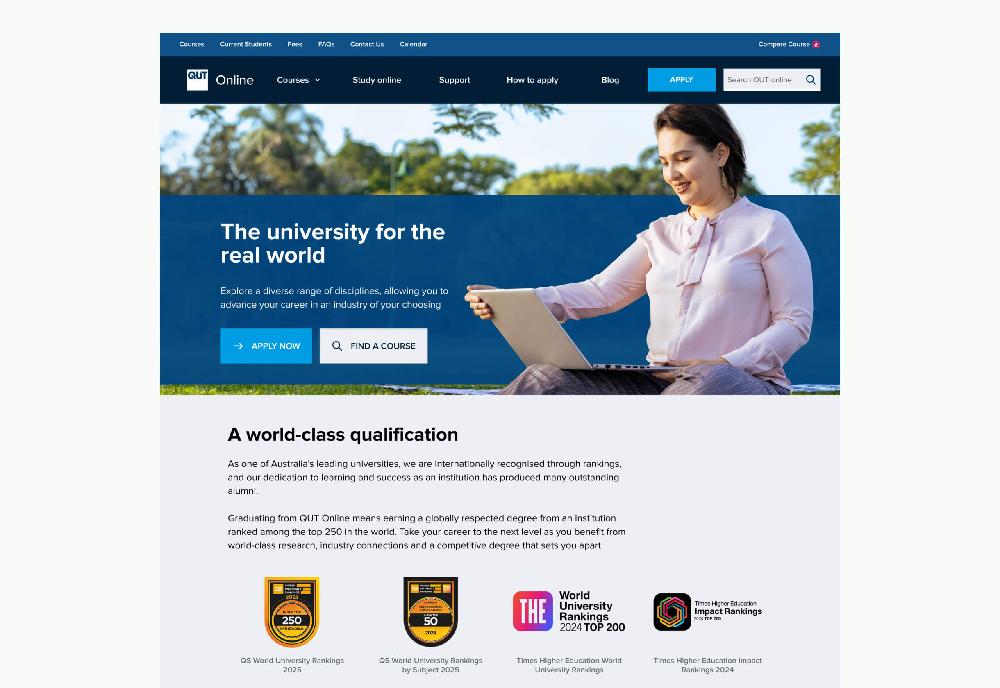
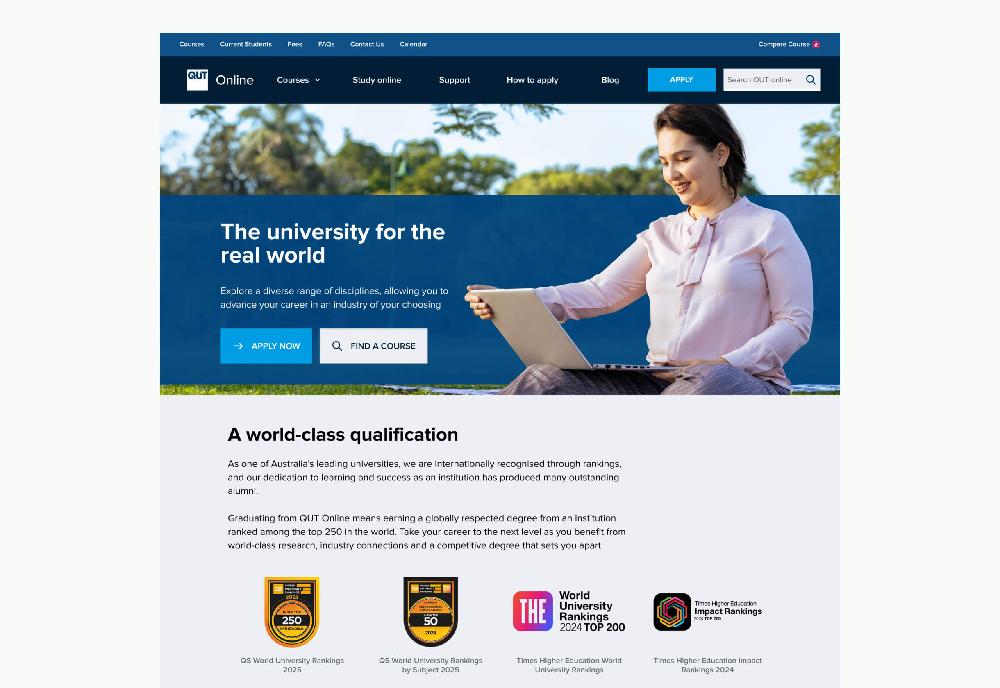
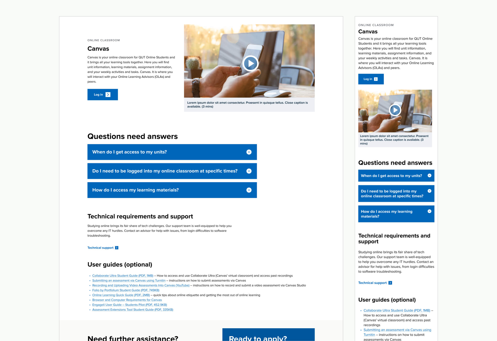
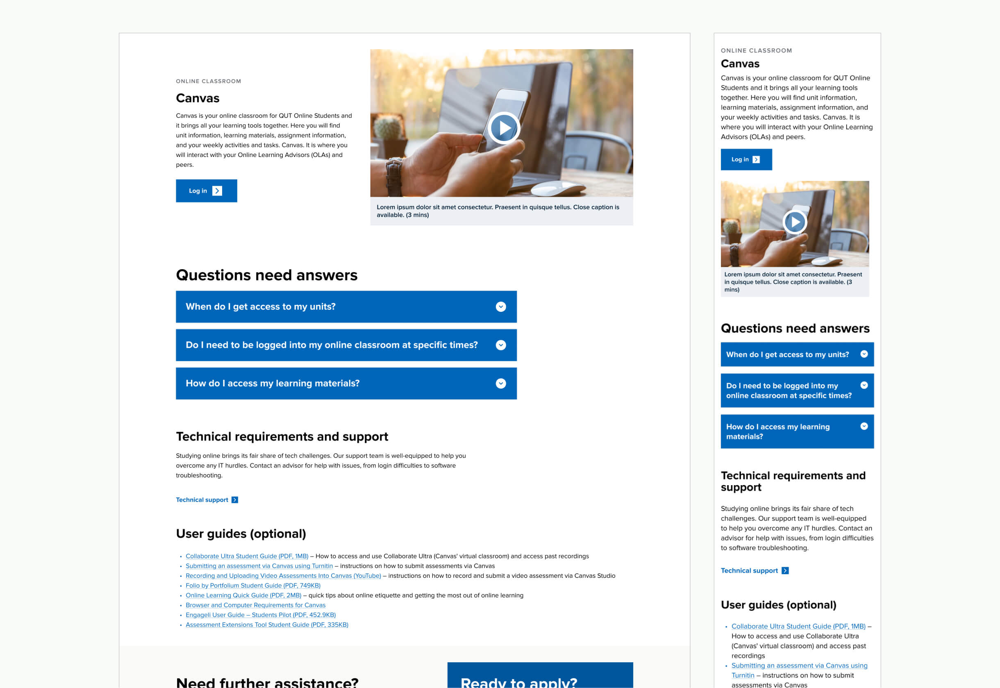

01 queensland university of technology online
 

2024
Lead Designer
QUT aimed to expand its reach in attracting online learners by leveraging its strengths in key fields of study. This required a complete rebuild of the QUT Online learning website to improve user experience and effectively showcase its offerings. A comprehensive design asset and template library needed to be developed to standardise and streamline the design process while providing scalable solutions for future updates.
The new QUT Online site launched on schedule, benefiting from a well-prepared design library and consistent assets. Early user feedback indicated an improved experience, leading to increased engagement, higher lead conversions, and a stronger position in the competitive online learning space.


 

Discovery & Problem Framing
We began by gathering insights through stakeholder workshops and existing site audits. Common issues included unclear course eligibility, lack of visibility on course pathways, and difficulty estimating course fees and completion time.
User Research
Conducted user interviews and usability testing of the existing site to better understand student goals, pain points, and decision-making behaviour. This was complemented by a competitor analysis, which revealed industry best practices and highlighted opportunities for QUT to differentiate through interactive tools and clearer course pathways. Insights from both informed the design direction and feature prioritisation.
Design System Implementation
I created a scalable, component-based design system in Figma to ensure consistency in both visual language and functionality across the platform. This system streamlined future updates and facilitated alignment between design and development teams.
User Testing & Iteration
Tested the prototype with real users to uncover usability issues and measure the impact of new features. Iterative updates were made based on direct user feedback.
QUT Course Brochure Re-design
I led the end-to-end re-design of the QUT course guide, creating a new layout system that accommodates a wide range of course content with flexibility and clarity. The redesign placed strong emphasis on typography, brand consistency, visual hierarchy, and user flow to enhance readability and engagement.
The final design was approved by internal stakeholders and has since been adopted for use in QUT’s upcoming teaching period, marking a significant improvement in the university’s marketing and communication materials.
UX/UI DESIGNER
Harry is a UX/UI designer who crafts intuitive, high-performance websites that align with business goals. With expertise in UX research, wireframing, prototyping, and UI design, he creates seamless, user-focused experiences.
His superpower is the ability to deeply understand business needs and translate them into effective design solutions, supported by a structured workflow. He is business-driven, with a strong focus on critical reviews, iteration, and design systems to ensure the delivery of high-quality design outcomes.